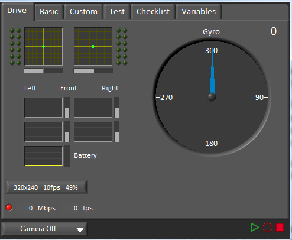
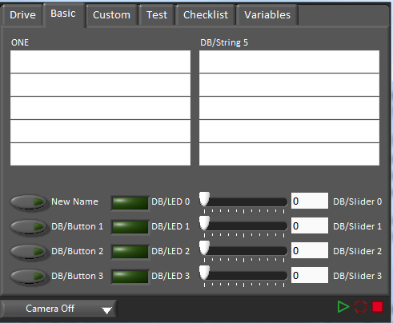
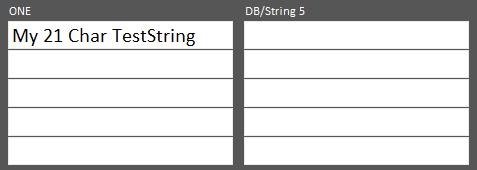
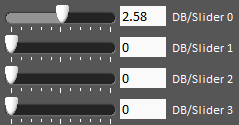

Using the LabVIEW Dashboard with C++/Java Code
The default LabVIEW Dashboard utilizes NetworkTables to pass values and is therefore compatible with C++ and Java robot programs. This article covers the keys and value ranges to use to work with the Dashboard.
Drive Tab
The Select Autonomous… dropdown can be used so show the available autonomous routines and choose one to run for the match.
SmartDashboard.putStringArray("Auto List", {"Drive Forwards", "Drive Backwards", "Shoot"});
// At the beginning of auto
String autoName = SmartDashboard.getString("Auto Selector", "Drive Forwards") // This would make "Drive Forwards the default auto
switch(autoName) {
case "Drive Forwards":
// auto here
case "Drive Backwards":
// auto here
case "Shoot":
// auto here
}
frc::SmartDashboard::PutStringArray("Auto List", {"Drive Forwards", "Drive Backwards", "Shoot"});
// At the beginning of auto
String autoName = SmartDashboard.GetString("Auto Selector", "Drive Forwards") // This would make "Drive Forwards the default auto
switch(autoName) {
case "Drive Forwards":
// auto here
case "Drive Backwards":
// auto here
case "Shoot":
// auto here
}
Sending to the “Gyro” NetworkTables entry will populate the gyro here.
SmartDashboard.putNumber("Gyro", drivetrain.getHeading());
frc::SmartDashboard::PutNumber("Gyro", Drivetrain.GetHeading());
There are four outputs that show the motor power to the drivetrain. This is configured for 2 motors per side and a tank style drivetrain. This is done by setting “RobotDrive Motors” like the example below.
SmartDashboard.putNumberArray("RobotDrive Motors", {drivetrain.getLeftFront(), drivetrain.getRightFront(), drivetrain.getLeftBack(), drivetrain.getRightBack()});
frc::SmartDashboard::PutNumberArray("Gyro", {drivetrain.GetLeftFront(), drivetrain.GetRightFront(), drivetrain.GetLeftBack(), drivetrain.GetRightBack()});
Basic Tab
The Basic tab uses a number of keys in the a “DB” sub-table to send/receive Dashboard data. The LED’s are output only, the other fields are all bi-directional (send or receive).
Strings
The strings are labeled top-to-bottom, left-to-right from “DB/String 0” to “DB/String 9”. Each String field can display at least 21 characters (exact number depends on what characters). To write to these strings:
SmartDashboard.putString("DB/String 0", "My 21 Char TestString");
frc::SmartDashboard::PutString("DB/String 0", "My 21 Char TestString");
To read string data entered on the Dashboard:
String dashData = SmartDashboard.getString("DB/String 0", "myDefaultData");
std::string dashData = frc::SmartDashboard::GetString("DB/String 0", "myDefaultData");
Sliders
The Sliders are bi-directional analog (double) controls/indicators with a range from 0 to 5. To write to these indicators:
SmartDashboard.putNumber("DB/Slider 0", 2.58);
frc::SmartDashboard::PutNumber("DB/Slider 0", 2.58);
To read values from the Dashboard into the robot program: (default value of 0.0)
double dashData = SmartDashboard.getNumber("DB/Slider 0", 0.0);
double dashData = frc::SmartDashboard::GetNumber("DB/Slider 0", 0.0);